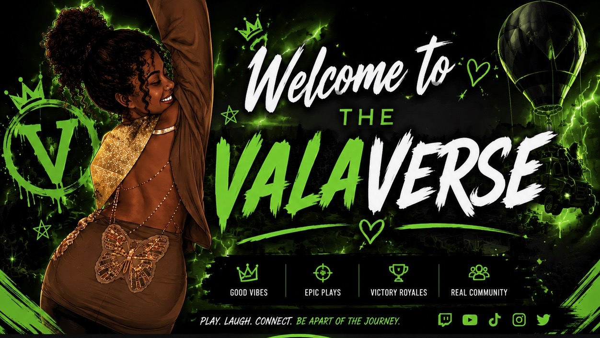
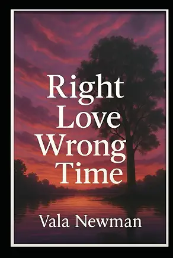

Love Worth Forgetting: Why The Last Sunrise Brought Me to Tears
A deep dive into Prime Original's adaptation of Anna Todd's novel—exploring generational secrets, family drama, and high-stakes romance.
Read Full Review →
Building an independent publishing company from the ground up while reviewing TV and movies, writing fiction, and creator of the Valaverse media brand.

Some people find the right love at the right time. Sam Keaton wasn’t one of them.
Samantha Keaton had it all mapped out: stay out of trouble, keep her grades up, and survive senior year with her two best friends by her side. But everything changes when Jax Ryner—sarcastic, reckless, and entirely off-limits—stumbles into her life like a beautiful storm.
What starts as stolen glances and inside jokes quickly unravels into something deeper, something dangerous, something real. But between broken families, long-standing friendships, and dreams that stretch far beyond their small town, Sam and Jax find themselves caught in the most painful kind of love: the kind that arrives too soon.
As graduation looms and the world begins to pull them apart, Sam must decide if love is worth risking everything for—even when the timing couldn't be worse.
Heartbreaking, hopeful, and brutally honest, Right Love, Wrong Time is a story about first love, found family, and the ache of growing up.
Short stories, pop culture breakdowns, and movie/TV essays.
A deep dive into Prime Original's adaptation of Anna Todd's novel—exploring generational secrets, family drama, and high-stakes romance.
Read Full Review →Explore all 22 poems capturing honest reflections on grief, love, family, mental health, and resilience.
Explore Poetry →A deep dive into character arcs, pacing, and visual themes in recent prestige TV drama.
Read Essay →Exclusive fiction pieces and creative writing drafts straight from the desk of Vala Newman Publishing.
Read Story →Documenting the real-time business administration, hurdles, and wins of launching an indie publisher in college.
Read Essay →Unfiltered discussions on media, writing, pop culture, and life.
Tune in as we dissect cinema, pop culture, and the raw reality of building a publishing brand from scratch.
Gear supporting Vala Newman Publishing and the Valaverse.